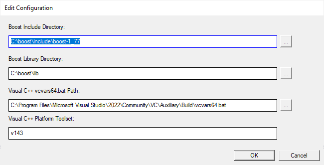
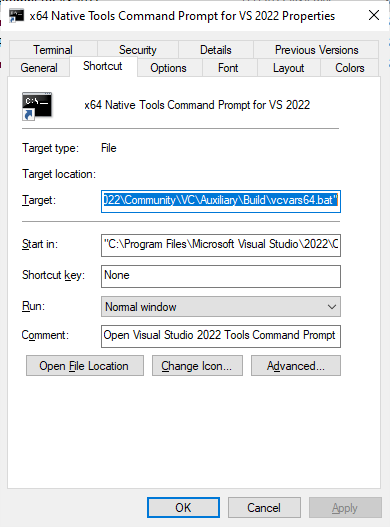

Wingstall Package Editor
The main window of the package editor looks like this:
Configuration
The configuration can be changed by selecting the Edit | Configuration... menu item.
In order to successfully compile Wingstall-generated setup projects using Visual C++, the following parameters must be set:
- Boost include directory
- Boost library directory
- Visual C++ vcvars64.bat path
The default values of these parameters are shown in the following picture:

The location of the vcvars64.bat can be found as follows:
- Select Windows Start menu and click Visual Studio 2019 folder.
- Right-click the 'x64 Native Tools Command Prompt for VS 2019'
- Select More | Open file location
- Right-click the 'x64 Native Tools Command Prompt for VS 2019' in the File Explorer
- Select Properties
- The 'Target' text box contains "%comspec% /k" followed by the vcvars64.bat path:

- My 'Target' text box contains the following value:
%comspec% /k "C:\Program Files (x86)\Microsoft Visual Studio\2019\Community\VC\Auxiliary\Build\vcvars64.bat"
So the path is C:\Program Files (x86)\Microsoft Visual Studio\2019\Community\VC\Auxiliary\Build\vcvars64.bat